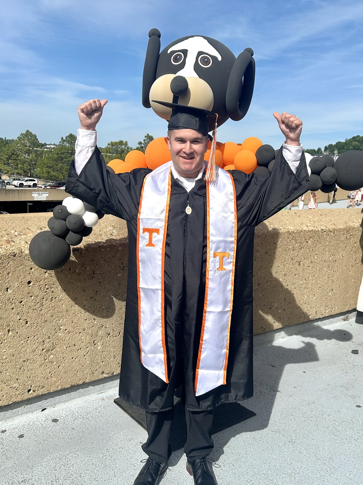

RYAN WOLPERT / SOFTWARE & MACHINE LEARNING
Curiosity,built intosoftware.

I’m Ryan, a computer science graduate turning
curious questions into things you can use.
BASED IN JACKSONVILLE, FLOpen to entry-level opportunities
in software, ML, and data.
Explore my work ↓
01 / Selected work
A FEW QUESTIONS I’VE BUILT ANSWERS TO
FEATURED PROJECT2025 — ONGOING
PetSnap.
A little curiosity. 120 dog breeds.
As a kid, I’d step outside and wonder what kind of bird, lizard, or frog I was looking at. Years later, learning about convolutional neural networks at UT gave me a way to answer that question.
PetSnap started with all animals. I narrowed the scope to dogs so I could build it well on my own—from training the model to building the app around it.
PETSNAP / UNDER THE HOOD↗
IMAGE INPUTCNN MODELRECOGNITION
From “what dog is that?”
to a model that can answer.
20k+Training images
120Dog breeds
92%Classification accuracy
Trained on the Stanford Dogs dataset.
02 / APPLIED AI · 2026[↗]
Coverage Copilot
Benefits questions, grounded answers.
A full-stack RAG app that answers questions about MASA’s emergency transportation benefits using its public FAQ and benefits pages. Built with query logging, a stats dashboard, and a 12-question evaluation set running in CI.
Explore the code ↗
03 / TEAM PROJECT · 2025⌁
HighHeat
From the pitch to the screen.
A baseball pitch tracking system built by a six-person team for UT’s Software Engineering course. I owned the React frontend, helped annotate the dataset in Roboflow, and worked with the backend team to connect ML inference to the interface.
Explore the code ↗
02 / A bit about me
A curious mind.
A practical approach.
Always building.
I graduated from the University of Tennessee, Knoxville with a B.S. in Computer Science in May 2026. An Intro to Machine Learning course helped turn a childhood interest in identifying animals into my favorite project, PetSnap.
I enjoy working across the whole problem: preparing data, training a model, connecting an API, and making an interface people can actually use.
BEFORE THE CODEUnion Connector Engineering Assistant
NOV 2021 — SUMMER 2025On a small, diverse team, I moved between equipment assembly, fabrication, customer quotes, and shipping. It taught me to adapt, pay attention to details, and understand how my work fits into the bigger picture.
Read my résumé ↗